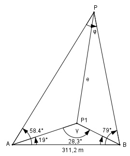

Aufgabe 194 Die Entfernung e zwischen den beiden Punkten P und P1 wird bei einer Landesvermessung gebraucht. Wie groß ist e?

Im Dreieck ABP1: γ = 180° - 19° - 28,3° = 132,7° Fall SWW: Sinussatz: AP AB ------------- = ------------ | *sin 28,3° sin 28,3° sin 132,7° 311,2 m * sin 28,3° AP1 = ----------------------- = sin 132,7° 311,2 m * 0,4741 = --------------------- = 200,8 m 0,7349 Im Dreieck ABC: φ = 180° - 58,4° - 79 = 42,6° Fall SWW: Sinussatz: AP AB ----------- = ------------ |*sin 79° sin 79° sin 42,6° 311,2 m * sin 79° 311,2 m * 0,9816 AP = ------------------- = ------------------- = sin 42,6° 0,6769 = 451,3 m Im Dreieck AP1P: Fall SWS Cosinussatz: e2 = AP2 + AP12 - 2*AP * AP1 * cos (58,4° - 19°) e2 = 451,32 + 200,82 - 2*451,3*200,8 * cos 39,4° e2 = 451,32 + 200,82 - 2*451,3 * 200,8 * 0,7727 e2 = 103 946,6 |√ e = 322,4 m